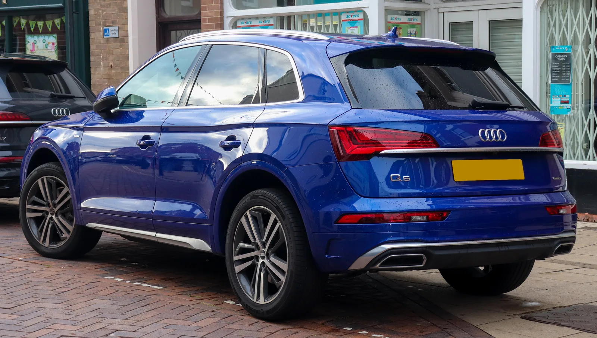
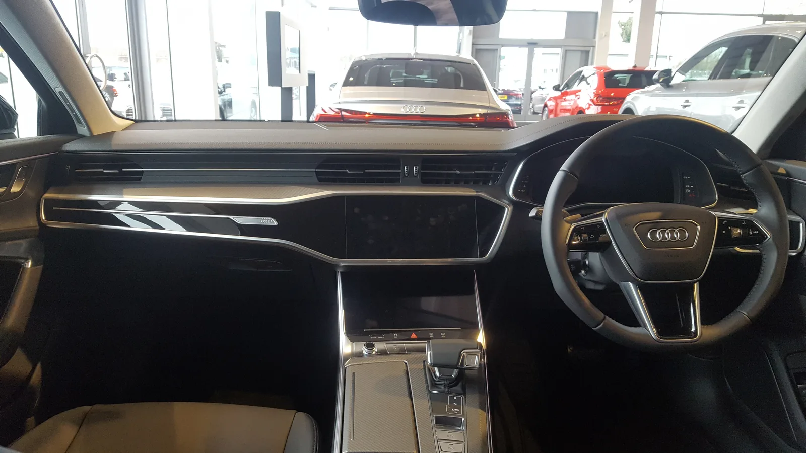

▲ 아우디의 대표 세단 A6. 아우디코리아는 2004년 법인 출범 이후 22년 만에 국내 누적 등록 30만대를 돌파했다고 밝혔다 ⓒ Wikimedia Commons
아우디코리아가 국내 누적 등록 30만대를 돌파했다. 2026년 9월 21일 회사 측 발표에 따르면, 2004년 공식 법인을 출범한 지 22년 만에 이룬 성과로 수입차 브랜드 가운데 메르세데스-벤츠, BMW에 이어 세 번째로 30만대 고지에 오른 기록이다.
아우디코리아는 이번 30만대 달성을 두고 "단순한 판매 수치를 넘어 고객과 함께 만들어 온 성장의 역사이자 브랜드에 대한 신뢰의 결과"라고 자평했다. 이를 기념해 전국 공식 딜러 네트워크와 함께 고객 감사 프로그램 'thAnk Q'도 전개한다.
1. 30만대 달성 발표 개요 — 수입차 세 번째 기록
아우디코리아는 2026년 9월 21일, 국내 누적 등록 대수가 30만대를 넘어섰다고 공식 발표했다. 등록 대수 기준 집계로, 아우디 한 브랜드가 국내에서 판매(등록)한 차량이 누적 30만대에 이르렀다는 의미다.
이는 국내 수입차 시장에서 메르세데스-벤츠, BMW에 이어 세 번째로 30만대를 돌파한 브랜드가 됐다는 점에서 의미가 크다. 두 브랜드가 오랜 기간 국내 수입차 시장을 양분해 온 것을 감안하면, 아우디의 이번 기록은 독일 3사 중 한 축으로서의 입지를 다시 한번 확인시켜준 셈이다.

▲ 아우디의 인기 SUV 라인업인 Q5. 국내에서도 세단 A6와 함께 꾸준한 판매를 이끌어온 모델이다 ⓒ Wikimedia Commons
아우디코리아의 30만대 달성 소식은 아래 카가이 기사에서 자세히 확인할 수 있다. 카가이 기사에서 확인 가능
2. 아우디코리아 한국 진출·성장 역사 — 2004년부터 22년
아우디코리아는 2004년 공식 법인을 출범하며 국내 시장에 본격적으로 뛰어들었다. 이후 22년 동안 세련된 디자인과 콰트로 사륜구동, 디젤 라인업을 앞세워 독일 프리미엄 브랜드 중 하나로 입지를 다졌다.
📍 순탄치만은 않았던 22년
아우디는 한때 디젤게이트 여파와 인증 지연으로 국내 판매에 어려움을 겪은 바 있다. 최근 몇 년간은 일본·중국 브랜드와의 경쟁 심화로 프리미엄 수입차 시장 내 입지가 축소되는 시기도 거쳤다. 이런 흐름 속에서 이번 30만대 달성과 판매 회복세는 아우디코리아에 '브랜드 재도약'의 상징적 이정표로 받아들여지는 분위기다.
업계에서는 누적 판매 대수를 차량 한 대당 평균 판매 가격 약 6500만원 기준으로 환산하면 누적 판매액이 약 20조원에 육박하는 것으로 추산하고 있다. 20여 년간 국내 소비자에게 판매된 차량 규모를 가늠할 수 있는 수치다.
3. thAnk Q 프로그램 세부 혜택 — 9~10월 두 달간 진행
아우디코리아는 30만대 달성을 기념해 9월과 10월 두 달간 고객 감사 프로그램 'thAnk Q'를 전개한다. 프로그램명은 아우디 세단·해치백 라인업인 'A' 라인과 SUV 라인업인 'Q' 라인의 앞글자를 조합해, 그동안 아우디를 선택해준 고객(You) 전체에게 감사(Thank)를 전한다는 의미를 담았다.
✅ thAnk Q 프로그램 주요 혜택
· 뱅앤올룹슨(B&O) 무선 헤드폰 등 프리미엄 사은품 제공
· 주유상품권 지급
· 커피 쿠폰 등 소소한 일상 혜택
· 아우디 오픈하우스 — 전시장 방문 고객 대상 브랜드 체험 행사
· 아우디벤처 — 아웃도어·라이프스타일 결합형 체험 프로그램
· 아우디 서머투어 — 드라이빙과 라이프스타일을 결합한 고객 참여 프로그램
단순 사은품 증정을 넘어, 전국 공식 딜러 네트워크와 함께 고객 만족도 제고와 장기적인 브랜드 신뢰 관계 강화에 방점을 찍은 캠페인이라는 게 회사 측 설명이다.
4. 최근 판매 실적과 인기 모델 — 회복세 뚜렷
아우디코리아의 최근 판매 흐름도 눈에 띈다. 2026년 1~8월 누적 판매량은 9082대로, 전년 동기 대비 22.2% 증가했다. 몇 년간 이어진 부진에서 벗어나 반등 흐름을 타고 있다는 평가다.

▲ Q5는 국내 수입 프리미엄 SUV 시장에서 아우디의 판매를 지탱해온 대표 모델이다 ⓒ Wikimedia Commons
이 같은 회복세를 이끈 배경으로는 라인업 세대교체가 꼽힌다. 최근 국내에 출시된 9세대 신형 A6와 3세대 Q3가 대표적이다. 여기에 중형 프리미엄 SUV Q5가 꾸준한 스테디셀러 역할을 하며 세단(A 라인)과 SUV(Q 라인) 양쪽에서 균형 잡힌 판매를 뒷받침하고 있다는 분석이다.

▲ 아우디 전시장에서 살펴본 A6의 실내. 디지털화된 계기판과 센터 디스플레이가 최근 세대교체 모델의 특징이다 ⓒ Wikimedia Commons
5. 수입차 시장에서 아우디의 위치 — 벤츠·BMW 대비
국내 수입차 시장은 오랫동안 메르세데스-벤츠와 BMW 두 브랜드가 선두를 지켜왔다. 두 브랜드는 이미 누적 등록 30만대를 넘어선 지 오래이며, 매년 수입차 판매 순위 상위권을 다투고 있다.
| 순위 | 브랜드 | 비고 |
|---|---|---|
| 1위 | 메르세데스-벤츠 | 국내 수입차 시장 최초로 누적 30만대 돌파 |
| 2위 | BMW | 벤츠에 이어 두 번째로 30만대 달성 |
| 3위 | 아우디 | 2026년 9월, 법인 출범 22년 만에 30만대 달성 |
3번째로 30만대에 도달했다는 점은 아우디가 여전히 독일 프리미엄 3사 구도 안에서 확고한 한 축을 차지하고 있다는 의미로 해석된다. 다만 최근 몇 년간 일본 브랜드(렉서스 등)와 중국계 자본이 얽힌 신흥 브랜드들의 공세가 거세지면서, 프리미엄 수입차 시장 내 경쟁 구도는 과거보다 훨씬 복잡해진 상황이다. 아우디코리아로서는 이번 30만대 달성과 판매 회복세를 발판 삼아, 신형 A6·Q3 등 세대교체 모델을 통해 벤츠·BMW와의 격차를 좁히는 것이 다음 과제로 남아 있다.
6. 요약
아우디코리아가 2004년 법인 출범 이후 22년 만인 2026년 9월, 국내 누적 등록 30만대를 돌파했다. 메르세데스-벤츠, BMW에 이어 수입차 브랜드 중 세 번째 기록이며, 누적 판매액은 대당 평균 가격 기준 약 20조원에 이르는 것으로 추산된다.
이를 기념해 9~10월 두 달간 고객 감사 프로그램 'thAnk Q'를 통해 뱅앤올룹슨 헤드폰, 주유상품권, 커피 쿠폰 등의 혜택과 아우디 오픈하우스·아우디벤처 등 브랜드 체험 프로그램을 제공한다.
최근 판매 흐름도 긍정적이다. 2026년 1~8월 누적 판매는 전년 동기 대비 22.2% 늘어난 9082대를 기록했으며, 9세대 신형 A6와 3세대 Q3 출시, 스테디셀러 Q5가 회복세를 뒷받침하고 있다. 다만 독일 3사 구도 속 격차를 좁히고, 일본·중국계 신흥 브랜드의 공세에 대응하는 것은 여전히 남은 과제다.